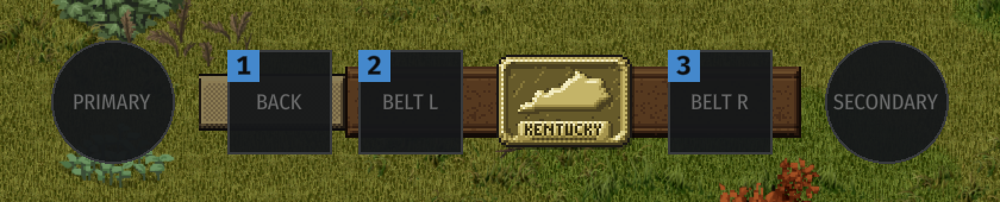

Mini watch on the belt | v1
Today

CaZio digital | left wrist, outside the off hand
- Left pusher
- Speed: 1x, 2x, 3x (the three marks under the time)
- Right pusher
- Start / pause (green light on the case while running)
- Face
- Pops the full watch up for the alarm
Timez Easy Reader | left wrist
- 8 o'clock pusher
- Speed
- 4 o'clock pusher
- Start / pause
- Crown
- Indiglow (lights the dial, as on the full watch)
- Face
- Pops the full watch up
States
Face pressed | the full watch pops up
It tucks back onto the belt after a few idle seconds or a second press on either watch.